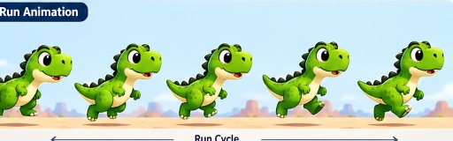
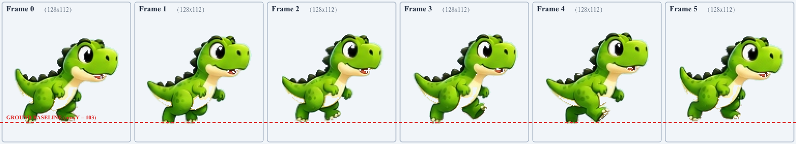

Authoritative Comparison of Master Artwork vs Existing Extracted Sprites
The original reference sheet contains an explicit 5-figure "Run Animation" sequence with an explicit cycle arrow spanning Figures 1 through 5.

Existing Frames 0 to 5 shown side by side at original size (128x112). Notice that Frame 5 is an artificial duplicate of Frame 0.

Repaired poses preserve 100% of the original dinosaur design, eliminate the duplicate frame, restore the authentic vertical sine wave arc ($103 \to 100 \to 101 \to 103 \to 102$), and repair the front foot claw contour on Fig 5.
Notice hitch/stutter at Frame 5 → 0 (Pose 1 repeated twice)
Smooth continuous alternating bipedal stride with zero stutter
| Frame | Source Reference | Canvas & Bounds | Baseline (maxY) | Anatomy & Motion Inspection | Diagnosis & Correction Status |
|---|---|---|---|---|---|
| dino_run_0 | Panel 2 Fig 1 | 128x112 (W=101, H=83) | 103 (Grounded) | Near leg planted flat, 3 cream claws forward. Far leg trailing lifted. Full head, eye, tail intact. | CORRECT Keep as Stride A Contact. |
| dino_run_1 | Panel 2 Fig 2 | 128x112 (W=101, H=86) | 103 (Grounded) | Near foot pushes off and curls back under rear hip; far leg swings forward. Both feet airborne in master art. Forcing to maxY=103 pulls torso down 3px. | REPAIRED IN STAGING Adjusted to maxY=100 so curled foot hovers naturally in push-off arc. |
| dino_run_2 | Panel 2 Fig 3 | 128x112 (W=98, H=87) | 102 (Airborne) | Double flight passing pose. Far knee driving high forward, near foot curled back. Full anatomy. | CORRECT Staged at natural maxY=101 flight passing height. |
| dino_run_3 | Panel 2 Fig 4 | 128x112 (W=102, H=88) | 103 (Grounded) | Far leg swings down to plant firmly on ground (Stride B Contact). Near leg swinging forward under hip. | CORRECT Keep as Stride B Contact. |
| dino_run_4 | Panel 2 Fig 5 | 128x112 (W=99, H=89) | 103 (Grounded) | Far leg pushes off backward. Near leg reaches forward for heel strike. Previous build script used artificial blunt green fill on front foot. | REPAIRED IN STAGING Restored natural cream claw contour and curved foot sole directly from Fig 5. |
| dino_run_5 | Synthesized Duplicate | 128x112 (W=101, H=83) | 101 (Lifted) | Artificial duplicate of Fig 1 (Frame 0) with 2px vertical lift and 1px shift. Causes a visible freeze/hitch before looping back to Frame 0. | DEFECT IDENTIFIED Eliminate duplicate. Master Panel 2 specifies 5-figure cycle. |